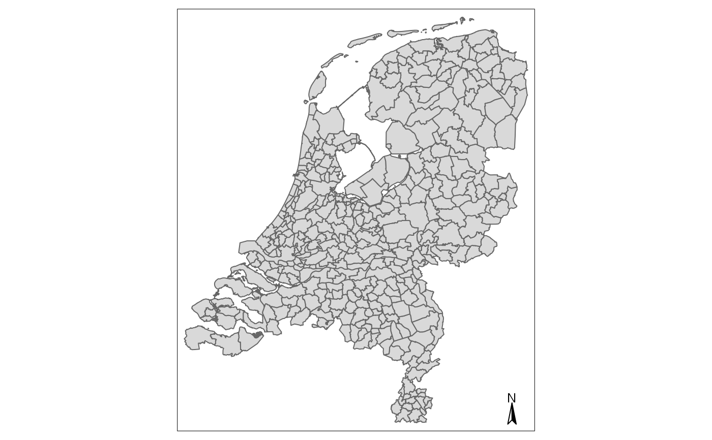
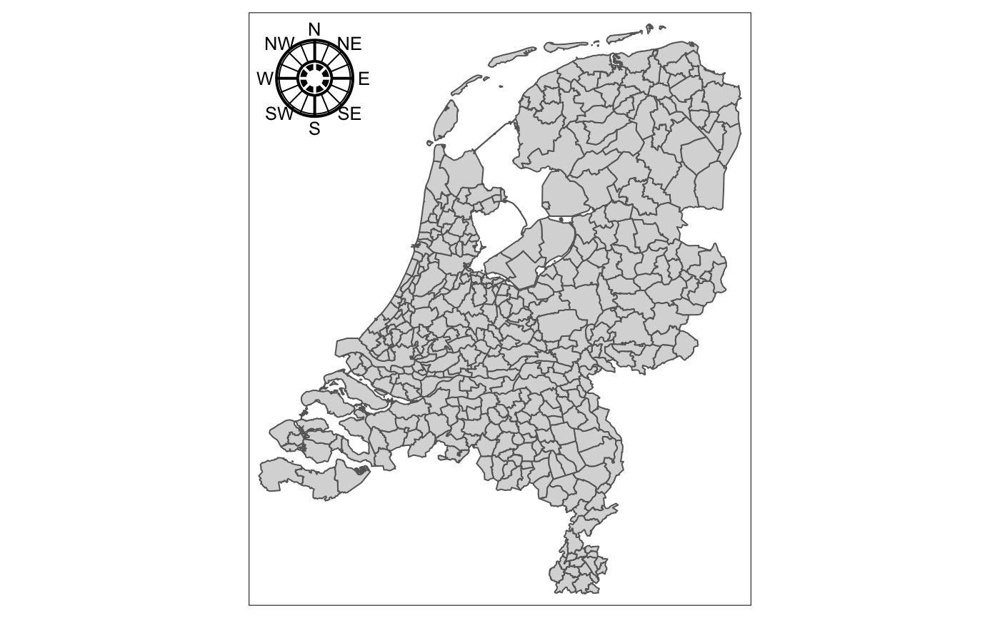

Creates a map compass.
tm_compass( north = 0, type = NA, text.size = 0.8, size = NA, show.labels = 1, cardinal.directions = c("N", "E", "S", "W"), text.color = NA, color.dark = NA, color.light = NA, lwd = 1, position = NA, bg.color = NA, bg.alpha = NA, just = NA, fontsize = NULL )
| north | north direction in degrees: 0 means up, 90 right, etc. |
|---|---|
| type | compass type, one of: |
| text.size | relative font size |
| size | size of the compass in number of text lines. The default values depend on the |
| show.labels | number that specifies which labels are shown: 0 means no labels, 1 (default) means only north, 2 means all four cardinal directions, and 3 means the four cardinal directions and the four intercardinal directions (e.g. north-east). |
| cardinal.directions | labels that are used for the cardinal directions north, east, south, and west. |
| text.color | color of the text. By default equal to the argument |
| color.dark | color of the dark parts of the compass, typically (and by default) black. |
| color.light | color of the light parts of the compass, typically (and by default) white. |
| lwd | line width of the compass |
| position | position of the compass. Vector of two values, specifying the x and y coordinates. Either this vector contains "left", "LEFT", "center", "right", or "RIGHT" for the first value and "top", "TOP", "center", "bottom", or "BOTTOM" for the second value, or this vector contains two numeric values between 0 and 1 that specifies the x and y value of the left bottom corner of the compass. The uppercase values correspond to the position without margins (so tighter to the frame). The default value is controlled by the argument |
| bg.color | Background color |
| bg.alpha | Transparency of the background color. Number between 0 (totally transparent) and 1 (not transparent). By default, the alpha value of the |
| just | Justification of the attribute relative to the point coordinates. The first value specifies horizontal and the second value vertical justification. Possible values are: |
| fontsize | deprecated: renamed to text.size |
#>#>